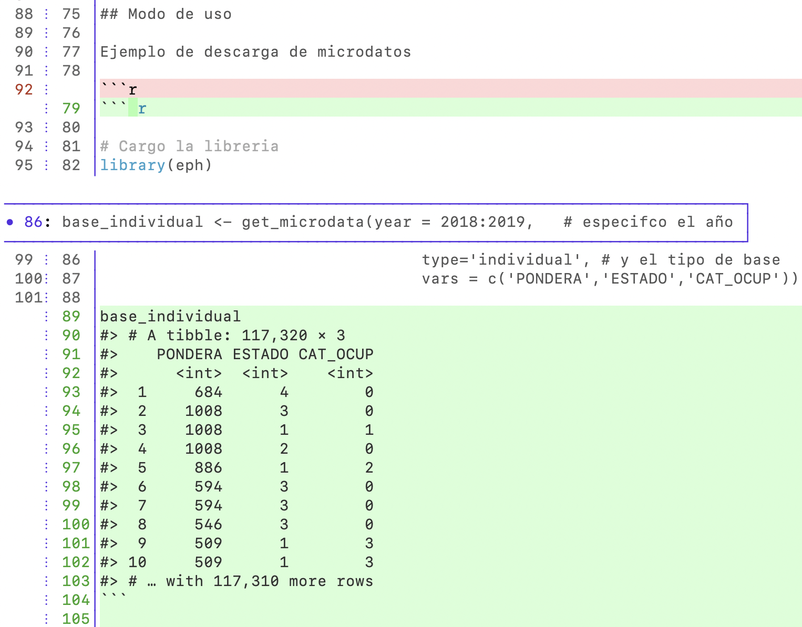

flowchart LR
B((1-Open issue))
B --> C{2-In scope?}
C -->|No| E{3-Exception?}
C -->|Yes| D[4-Submit]
E -->|Yes| D
E -->|No| G((5-Close issue))
31 rOpenSci Software Peer Review Workshop
NotaBeing refined
You are reading the first edition in progress and in English of this book, based on the training curriculum of the rOpenSci Champions Program. This chapter should be readable, but it is undergoing final polishing.
Source of the migrated content: this chapter originates from the software-review repository.
32 Workshop Introduction
License: Attribution-NonCommercial 4.0 International
32.1 Main Objectives
Day 1
- Familiarize yourself with the stages and qualities of the process
- Practice proposing software for review
Day 2
- Practice submitting software for review
32.2 Day 1 Plan
- Workshop introduction
- End-to-end process introduction
- Comparison with academia
- Proposing and submitting software for review
- {pkgcheck}
- Code of conduct and communication
- Break
- Proposing software for review
- Opening an issue
- Kind and constructive communication
- Questions and comments
33 Review Process Overview
About how we work with software and people
33.1 Proposing Software for Review
33.2 Submitting Software for Review
flowchart LR
B((1-Open issue))
B --> C[2-Review]
C --> D{3-Ready?}
D -->|No| C
D -->|Yes| E((Publish))
33.3 {pkgcheck}: Usage in an Issue
@ropensci-review-bot check package33.4 {pkgcheck}: Local Usage
Usage
package <- "/path/to/package"
results <- pkgcheck::pkgcheck(package)
results
summary(results)33.5 Code of Conduct
- rOpenSci’s community is our best asset.
- We aim for reviews to be
- open,
- non-adversarial,
- and focused on improving software quality.
- Be respectful and kind.
33.6 Kind and Constructive Communication
Offer
- Safety
- Suggestion/Decision
- Follow-up
33.7 Kind and Constructive Communication
From an author:
I couldn’t find a category that fit perfectly, so I created a new category.
34 Break 10’
35 Proposing Software for Review
36 Questions and Comments
37 Day 2 Introduction
What did we see on day 1? What are we going to see today?
37.1 Day 2 Plan
- Review
- Preparing a package
- Reviewing a package: Introduction
- Break
- Reviewing a package: Activity
- Responding to a review
- Questions and answers
37.2 Review: Proposing Software
The karel package teaches programming. Its objective is outside the scope of rOpenSci. It was proposed for review in 2023, during the champions program.
Proposing software for review
flowchart LR
B((1-Open issue))
B --> C{2-In scope?}
C -->|No| E{3-Exception?}
C -->|Yes| D[4-Submit]
E -->|Yes| D
E -->|No| G((5-Close issue))
37.3 Review: Communication
38 Submitting Software for Review
Example
# install.packages("usethis")
# ✖ does not have a 'contributing' file.
usethis::use_tidy_contributing()
# ✖ Package has no HTML vignettes
usethis::use_article("saperlipopette")
# ✖ These functions do not have examples: [create_all_exercises].
# From https://github.com/ropensci-training/saperlipopette/blob/main/R/create-all.R
#' @examplesIf interactive()
#' parent_path <- withr::local_tempdir()
#' path <- create_all_exercises(parent_path = parent_path)
#
# devtools::document()38.1 Reviewing a Package
Examples
{eph}: Use an automatic code formatter (review - commit).
Please use an automatic code formatter (e.g.,
usethis::use_tidy_style()). It’s useful to see that the style is consistent and follows a popular style guide like the “tidyverse style guide” (https://style.tidyverse.org/). This helps avoid thinking about style and saves mental energy for noticing more important things. Here are some examples of style violations:

{eph}: Show the output of examples in README (review - commit).
In the “Usage” section, please show the results so they can be seen without needing to install the package and run the code.
